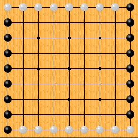
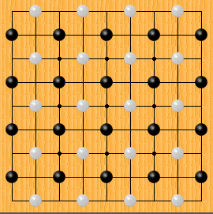
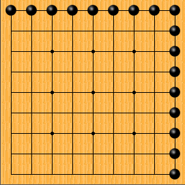
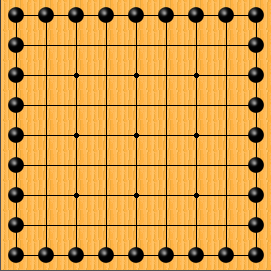
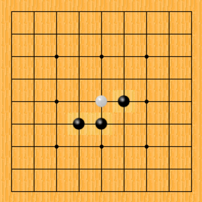
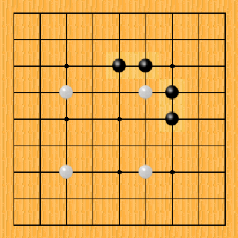
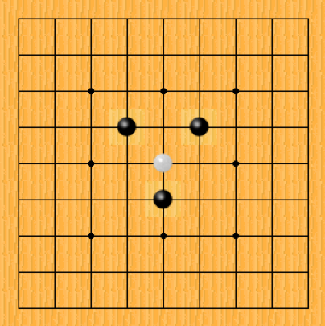
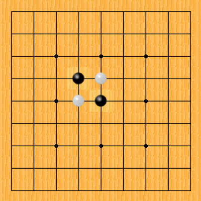

Welcome to Wood and Stones, a web page that turns your iPad into a Goban, a board used for playing a game of Go with another human player. Wood and Stones can also be used to play related games like Irensei.
Wood and Stones turns your iPad into a Goban, a board used for playing a game of Go with another human player. Wood and Stones can also be used to play related games like Irensei.
You can start a new game at any time by drawing a "+" with your finger on the screen. You will be presented with the new game form where you can select your options.
First, you enter the names of the players. You can leave these blank if you like, in which case they will be known as "Black" and "White."
You pick the rules first. There are lots of games for two players featuring black and white stones on a lattice of intersections, and "Wood and Stones" lets you play lots of them with a friend.
Depending on the rules you choose, you may be offered a choice of board size from 9x9 up to 19x19. As a rough guide, larger boards offer more complex and subtle opportunities for play.
Depending on the rules you choose, you may be offered a choice of ways to set the board up for the game. In some cases, these are fixed positions for one or more stones. These fixed positions might be handicaps for Black or they might be initial setups that wildly affect the character of the game.
In some cases, these are opportunities for Black to have free placements before the game begins. Unlike fixed handicaps, free placements provide Black with an opportunity to dictate the style of play.
A few setups place stones randomly on the board. This helps to break games free from stereotypical opening play and rewards intuition over memorization.
The "Classic," "Free Placement," and "More Setups" rules are all the commonly played rules of Go. They differ only in the setups available. Only the most recently played move is considered for Ko. Suicide is not allowed, however if a placement would capture one or more stones, it need not have liberties. Wood and Stones does not score games, so it is up o the players how to count the territories.
The Classic setups are the traditional handicap options: Either Black plays first, or Black receives a handicap of two to nine stones and white plays first. Handicap stones are placed on the Hoshi points in the proscribed manner.
The Free Placement setups also offer Black the choice of playing first or receiving a handicap of two to nine stones and white playing first. However, instead of the handicap stones being placed on the Hoshi points, Black places them as he pleases. In effect, Back receives free turns at the beginning of the game.
There are a number of variations of Go that use the exact same rules of play and scoring but use special setups. Some—like Wild Fuseki—produce subtly different games. Others—like Dots or Influence—are dramatically unique playing experiences.
"Pie Rule" is a variation where Black places a single stone anywhere on the board, and White may either place a stone or pass. If White places a stone, the game continues as usual. If White passes, the players swap colours and the player who was originally Black now is White and places a white stone on the board. Pie Rule provides Black with a disincentive to play too well or too poorly on the first turn, thus creating a very balanced game.
"Wild Fuseki" is a variation where the first three stones for each player are randomly selected, with the proviso that no stones are placed within two rows of any edge, no illegal position is created, and no stones are placed in atari. Really Wild Fuseki places the first twelve stones for each player. The effect of Wild Fuskeki is to reward intuition over memorization of opening patterns.
 Influence Go gives each player opposing edges of the board. This game usually involves a fight to secure the center and establish a connection to your strong sides.
 Dots Go consists of stones on alternate intersections of the board. Games evolve very differently than standard Go.
Sunjang Baduk is an archaic Korean version of Go. There is a prescribed opening position, and the scoring is a little different from Japanese or Chinese go. Even if you don't care to play with different scoring, you might find games with the Sunjang Baduk opening setup a refreshing change of pace.
Classical Chinese Opening go players started each game with two stones each on corner Hoshi points, leading to fighting. Classical Chinese rules were also different, however choosing this option starts a standard game of Go with the Classical Chinese Opening.
The "White to Live" games all use the standard Go rules for play, however their objective is different. In each game, Black is given an overwhelming advantage and White is hard-pressed to survive. White wins if he can make life, i.e. create a safe group with two eyes. Black wins instantly if he can remove all the white stones from the board. There are several different setups.
 Corner Go is a corner invasion exercise: Only one corner is available to White. Corner Go works well on small boards.
 Shape Go gives Black a line of stones all the way around the board, and White has to try to make life with no corners or edges. Best on large boards.
You can also play where Black is given a large number of free placements and White simply tries to survive. An even game is thought to be seventeen placements on a 19x19 board, however you can choose more or fewer to establish a handicap. You may also choose a smaller board and fewer placements.
"Atari Go" is a teaching game that follows the standard rules of Go for play, however the objective is to be the first to make a capture, not to take territory. The setups for Atari Go are a series of progressive teaching exercises. When the student has progressed to playing the last exercise competently, he can move on to play "Capture Five," a game where the objective is to be the first to capture five or more stones.

Atari Go's "Learn about ladders" sets up a classic "ladder" for Black. As soon as Black learns how to force White to surrender a stone, progress to "Learn about nets:"

Atari Go's "Learn about nets" sets up a classic "net" for Black. As soon as Black learns how to force White to surrender a stone, progress to "Beat the Teacher:"

Atari Go's "Beat the Teacher" provides Black with a strong advantage but also provides White with several different opportunities to dictate the shape of play. Black should continue to play this variation until a stone can be captured no matter what line of defence White attempts.

Atari Go's "Cross-cutting" is an almost perfectly balanced setup that mimics a common pattern in Go games. Mistakes by either player will lead to a loss. Continue to play "Cross-cutting" until draws are commonplace, then progress to "Capture Five."
In "Capture Five," the winner is the first player to capture five or more stones. This encourages both players to consider sacrificing stones to obtain an advantage, tempting the opponent to abandon a strong defensive style.
Capture Five uses the same balanced setup as "Cross-cutting."
"Irensei" is a game with standard Go rules, however captures and territory are irrelevant to scoring. The winner is the first player to make an unbroken line of seven stones in a row, although a line with stones within two intersections of the edge does not count. Black plays first, and to counter this advantage there is a special rule that black loses if he makes a line of eight or more stones. White can make a line of any length.
In Gonnect, the winner is the first to connect either pair of opposite sides of the board with a single group, or a player loses when he has no legal move available. Passing is not allowed. This difference from normal Go is crucial, as it prevents a deadlock where neither player can connect: each player must eventually fill in their territory until they are vulnerable to capture or have no legal moves available.
One Eyed Go is just like classic Go, however suicide is never allowed, even if your play would otherwise capture stones. One consequence of this simplification of the rules is that a single eye is enough to make a group safe.